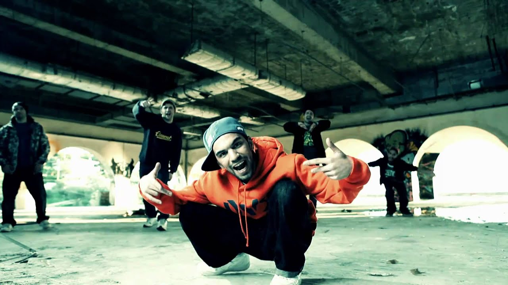
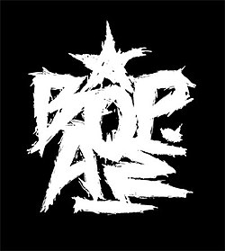

E-SHOP
| Αρχική
| Μέλη
| Iστορία
| Δισκογραφία |
ΒΟΡΕΙΑ ΑΣΤΕΡΙΑ

Τα Βόρεια Αστέρια (γνωστοί και ως ΒΟΡ.ΑΣ.) είναι ένα Ελληνικό Ραπ συγκρότημα από την Θεσσαλονίκη.
Ιδρύθηκε το 1999, ενώ μέλη του group αυτού είναι οι Λεξ , Τζαμαλ , Μικρός Κλέφτης , Ζήνων και Mondi .
Αρχικά, δημιουργήθηκαν ως μία ομάδα graffiti, όμως στην συνέχεια αυτή η ομάδα ξεδίπλωσε το τελέντο της στην Ραπ μουσική!
Μερικά γνωστά τραγούδια τους είναι το "Θερμή Θεσσαλονίκη", που μιλάει για την πόλη τους και τα "Ότι έχουμε είμαστε εμείς" και "Απόψε βγαίνουμε".
Ξεκίνησαν να κυκλoφορούν τα τραγούδια τους το 2003, ενώ ο τέταρτος και τελευταίος δίσκος τους ήταν ο "5 Αστέρων" το 2010.
Τα Βόρεια Αστέρια στο YouTube
